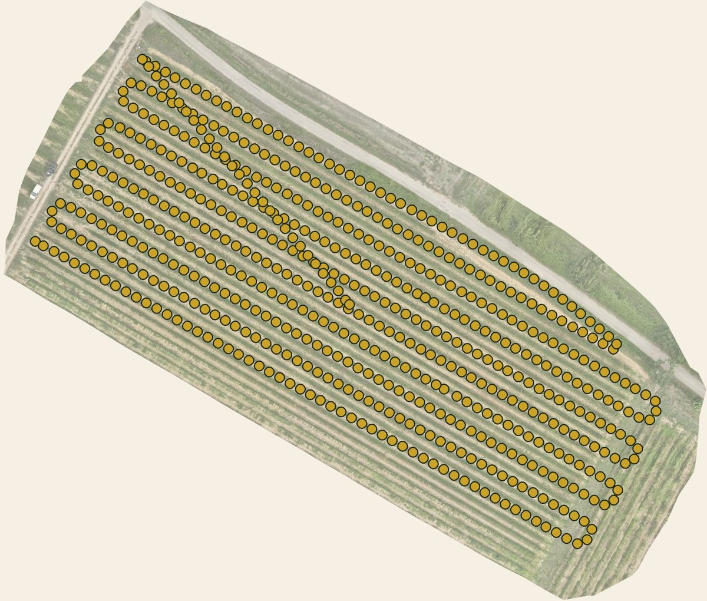
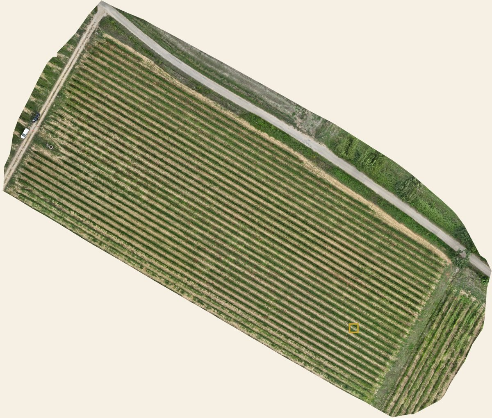
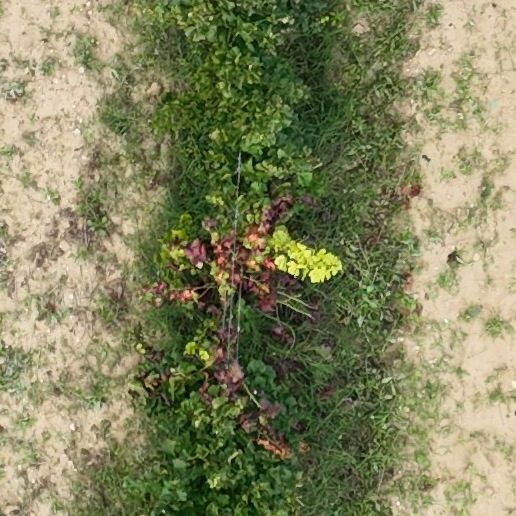
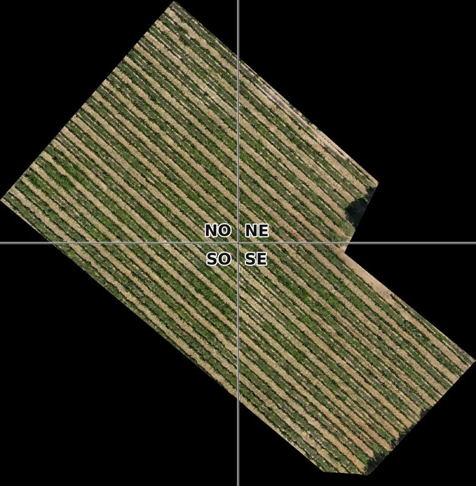
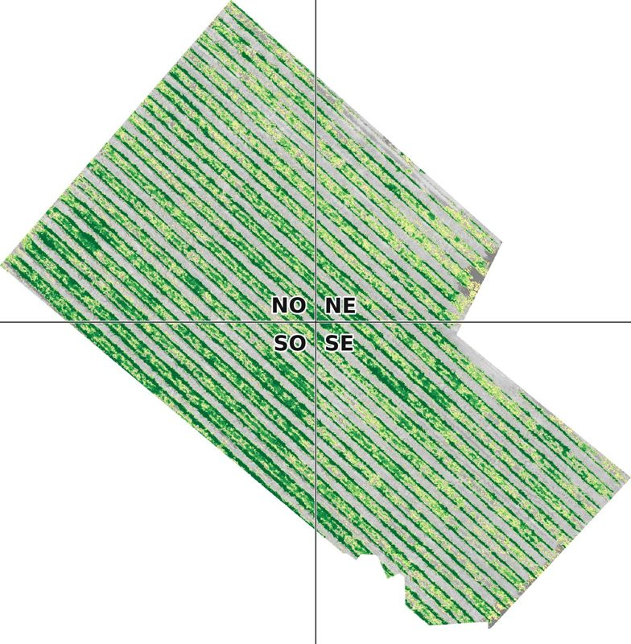
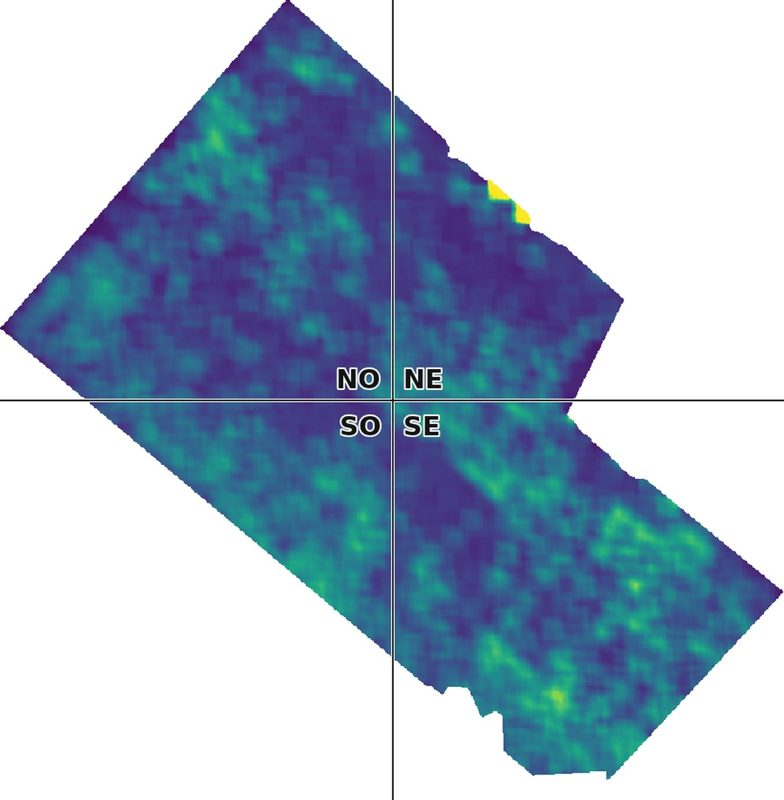

Notre solution
Voir toute la parcelle,
aller là où ça compte.
Un drone équipé d'une caméra multispectrale survole chaque parcelle tous les mois. Une intelligence artificielle compare les vols et désigne les secteurs à aller voir. Le vigneron vérifie, et le modèle apprend.
Ce que nous cherchons
Quatre cibles
Mildiou
Après la pluie, le feuillage perd de sa vigueur par taches. Nos premiers résultats sont solides.
Oïdium
Un voile sur les feuilles, encore difficile à voir d'en haut. Nous continuons à chercher.
Flavescence dorée
Feuillage rouge ou jaune à l'automne, cep par cep. Le drone retrouve déjà où la maladie se concentre.
Manquants
Chaque place vide repérée, rang par rang, pour préparer la complantation.
La méthode
De la carte au terrain, en huit étapes
- Cartographier chaque parcelleUne carte assemblée à partir de centaines de photos, à 2 cm par pixel : chaque cep est visible.
- Planifier selon le calendrier des maladiesMildiou et oïdium de mai à septembre, flavescence dorée en septembre et octobre.
- Déclarer chaque volAuprès de l'aviation civile, du Parc naturel régional du Luberon, des propriétaires et des voisins, et de la Préfecture si nécessaire.
- Survoler tous les moisAu même créneau, à la même hauteur : c'est la répétition qui révèle les changements.
- Reconstituer la parcelleDes centaines de prises de vue assemblées en une seule image calée au GPS, lisible jusqu'à la feuille.
- Mesurer la lumière que renvoie la vigneY compris celle que l'œil ne voit pas : le red-edge et le proche infrarouge.
- Apprendre, vol après volL'intelligence artificielle compare chaque portion de rang au reste de la parcelle et aux vols précédents.
- Livrer une carte de foyers, puis vérifier au solUne vingtaine d'alertes classées avec leurs coordonnées GPS, figées avant la vérification : impossible de corriger après coup.



Les indices
Trois façons de regarder une feuille
Une feuille en bonne santé absorbe la lumière rouge et renvoie fortement l'infrarouge. Une feuille qui souffre fait l'inverse. Le drone mesure ce changement.




Grenache noir, vol du 24 août 2026. Vue par le NDVI, la vigne paraît homogène ; vue par le NDRE, l'écart entre zones est quatre fois plus grand.
Ce que vous recevez
Simple, transparent, dans la durée
Un outil simple
Une carte, une liste, un fichier sur le téléphone. Rien à installer, rien à apprendre.
La transparence
Des listes d'alertes figées avant vérification, des méthodes ouvertes aux organismes de lutte contre les maladies.
La mémoire des parcelles
Les mêmes parcelles d'une année sur l'autre, pour suivre l'évolution des foyers.
Demain
Traiter par drone, seulement le foyer
Détecter un foyer, puis traiter ce foyer et lui seul, avec du soufre et du cuivre autorisés en bio. Le drone passe là où le tracteur ne passe pas : sols détrempés, pentes, terrasses.
Objectif : moins de produit, pas de tassement, pas de carburant, moins d'exposition pour l'applicateur. Nous portons avec les vignerons et les institutions une demande d'autorisation expérimentale pour la campagne 2027 dans le Luberon.
Une porte entrouverte
2009 · En Europe, la pulvérisation aérienne est interdite par principe, drone compris.
2026 · Autorisée en France sous conditions : vignes en pente de 20 % et plus, produits bio, de biocontrôle ou à faible risque.
Demain · Les textes prévoient des essais encadrés. C'est la porte que nous voulons ouvrir, ensemble.
Nous commençons par la vigne
Demain, la même méthode servira d'autres cultures.